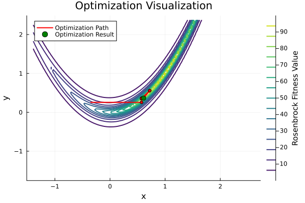

Simple Example usage for solvig the Rosenbrock Problem
using GeneticAlgorithms
using GeneticAlgorithms.Selection
using GeneticAlgorithms.Crossover
using GeneticAlgorithms.Mutation
using GeneticAlgorithms.Fitness
using GeneticAlgorithms.PopulationInitialization
rouletteWheelSelection = RouletteWheelSelection()
singlePointCrossover = SinglePointCrossover()
geneMutation = RealGeneMutation(0.5, (-0.5, 0.5))
uniform = RealUniformInitialization(1000, 2, (-1.0, 1.0))
ga_rosenbrock = GeneticAlgorithm(uniform, rosenbrock_fitness, rouletteWheelSelection, singlePointCrossover, geneMutation, elitism=true, max_generations=100, mutation_rate=0.5, save_best=true)
println(optimize(ga_rosenbrock))GeneticAlgorithms.Types.Chromosome{Float64}([1.0102689568263217, 1.0208293876377583])Visualizing Results - Rosenbrock Problem
## Preparation
using GeneticAlgorithms
using GeneticAlgorithms.Selection
using GeneticAlgorithms.Crossover
using GeneticAlgorithms.Mutation
using GeneticAlgorithms.Fitness
using GeneticAlgorithms.PopulationInitialization
rouletteWheelSelection = RouletteWheelSelection()
singlePointCrossover = SinglePointCrossover()
geneMutation = RealGeneMutation(0.5, (-0.5, 0.5))
uniform = RealUniformInitialization(10, 2, (-1.0, 1.0))
ga_rosenbrock = GeneticAlgorithm(uniform, rosenbrock_fitness, rouletteWheelSelection, singlePointCrossover, geneMutation, elitism=true, max_generations=100, mutation_rate=0.5, save_best=true)
optimize(ga_rosenbrock)
## Visualisation
using GeneticAlgorithms.Utils
visualize_rosenbrock_results(ga_rosenbrock.best_chromosomes, "rbplot.svg")"/home/runner/work/GeneticAlgorithms.jl/GeneticAlgorithms.jl/docs/build/rbplot.svg"
Sudoku Solver
using GeneticAlgorithms
using GeneticAlgorithms.Selection
using GeneticAlgorithms.Crossover
using GeneticAlgorithms.Mutation
using GeneticAlgorithms.Fitness
using GeneticAlgorithms.PopulationInitialization
using GeneticAlgorithms.Utils
using GeneticAlgorithms.Types
initial = [
[5, 3, 0, 0, 7, 0, 0, 0, 0],
[6, 0, 0, 1, 9, 5, 0, 0, 0],
[0, 9, 8, 0, 0, 0, 0, 6, 0],
[8, 0, 0, 0, 6, 0, 0, 0, 3],
[4, 0, 0, 8, 0, 3, 0, 0, 1],
[7, 0, 0, 0, 2, 0, 0, 0, 6],
[0, 6, 0, 0, 0, 0, 2, 8, 0],
[0, 0, 0, 4, 1, 9, 0, 0, 5],
[0, 0, 0, 0, 8, 0, 0, 7, 9]
]
println("Initial Sudoku State:")
print_sudoku(Chromosome(initial))
initStrategy = SudokuInitialization(20, initial)
rouletteWheelSelection = RouletteWheelSelection()
singlePointCrossover = SinglePointCrossover()
geneMutation = SudokuMutation(0.1, initial)
fitness_fn = (genes) -> sum(abs.(genes))
ga = GeneticAlgorithm(initStrategy, sudoku_fitness, rouletteWheelSelection, singlePointCrossover, geneMutation, elitism=true, max_generations=1000, mutation_rate=0.4, save_best=true)
chromosome = optimize(ga)
println("Optimized Result:")
print_sudoku(chromosome)Initial Sudoku State:
Sodoku:
[5, 3, 0, 0, 7, 0, 0, 0, 0]
[6, 0, 0, 1, 9, 5, 0, 0, 0]
[0, 9, 8, 0, 0, 0, 0, 6, 0]
[8, 0, 0, 0, 6, 0, 0, 0, 3]
[4, 0, 0, 8, 0, 3, 0, 0, 1]
[7, 0, 0, 0, 2, 0, 0, 0, 6]
[0, 6, 0, 0, 0, 0, 2, 8, 0]
[0, 0, 0, 4, 1, 9, 0, 0, 5]
[0, 0, 0, 0, 8, 0, 0, 7, 9]
Optimized Result:
Sodoku:
[5, 3, 2, 6, 7, 8, 9, 1, 4]
[6, 7, 4, 1, 9, 5, 3, 2, 8]
[1, 9, 8, 5, 4, 3, 7, 6, 2]
[8, 5, 1, 9, 6, 2, 7, 4, 3]
[4, 9, 6, 8, 7, 3, 5, 2, 1]
[7, 8, 3, 1, 2, 4, 9, 5, 6]
[4, 6, 9, 3, 5, 7, 2, 8, 1]
[2, 8, 7, 4, 1, 9, 6, 3, 5]
[3, 1, 5, 2, 8, 6, 4, 7, 9]